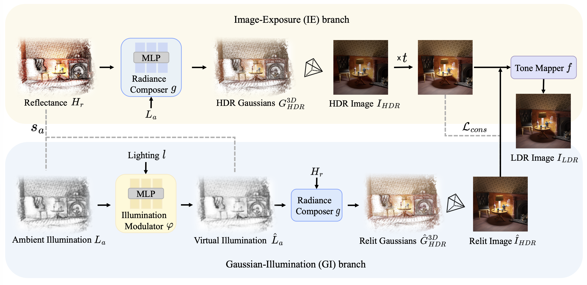

High dynamic range novel view synthesis (HDR-NVS) reconstructs scenes with dynamic details by fusing multi-exposure low dynamic range (LDR) views, yet it struggles to capture ambient illumination-dependent appearance. Implicitly supervising HDR content by constraining tone-mapped results fails in correcting abnormal HDR values, and results in limited gradients for Gaussians in under/over-exposed regions. To this end, we introduce PhysHDR-GS, a physically inspired HDR-NVS framework that models scene appearance via intrinsic reflectance and adjustable ambient illumination. PhysHDR-GS employs a complementary image-exposure (IE) branch and Gaussian-illumination (GI) branch to faithfully reproduce standard camera observations and capture illumination-dependent appearance changes, respectively. During training, the proposed cross-branch HDR consistency loss provides explicit supervision for HDR content, while an illumination-guided gradient scaling strategy mitigates exposure-biased gradient starvation and reduces under-densified representations. Experimental results across realistic and synthetic datasets demonstrate our superiority in reconstructing HDR details (e.g., a PSNR gain of 2.04 dB over HDR-GS), while maintaining real-time rendering speed (up to 76 FPS).
Camera exposure and ambient illumination both shape the dynamic range of a scene, but in complementary ways. A change in exposure Δt induces a global intensity change ΔIHDR across the entire image, while a change in ambient illumination ΔLa triggers local, lighting-conditioned radiance variation ΔÎHDR (e.g., on the nameplate of the lucky cat). Their different response patterns reveal complementary ways of modeling dynamic-range details, motivating our dual-branch framework that jointly controls camera exposure in 2D image space and ambient illumination in 3D Gaussian space.

As shown above, PhysHDR-GS factorizes the Gaussian color into intrinsic hemispherical-directional reflectance Hr and adjustable ambient illumination La, grounded in physically-based rendering. The framework is driven by three key components:
An MLP-based radiance composer produces HDR Gaussian color from reflectance and illumination. The IE branch globally scales the projected HDR image by camera exposure t; the GI branch relights the scene via a virtual illumination modulator, locally rescaling radiance intensity to avoid saturation. Together, they cover a higher dynamic range.
A lightweight tone mapper fuses complementary global/local LDR outputs from both branches. A cross-branch HDR consistency loss aligns the IE and GI HDR predictions in the pre-tone-mapped domain, providing explicit HDR self-supervision without ground truth and correcting abnormal saturated values.
Gaussians in over/under-exposed regions receive small gradients due to the flat slope of the tone mapping curve, causing under-densification. We observe that illumination deviation |La−L̂a| is inversely correlated with gradient magnitude. A scaling factor sa amplifies per-Gaussian gradients proportionally, preventing insufficient splitting.
We evaluate on three benchmarks: HDR-NeRF-Real, HDR-Plenoxels-Real, and HDR-NeRF-Syn, under two exposure settings (exp3: three alternating exposures; exp1: fixed single exposure). Our Scaffold-GS variant Ours† achieves the overall best performance, e.g., a PSNR gain of 0.59 dB on HDR-NeRF-Real (LDR-OE / exp3) over GaussHDR†. The vanilla 3DGS variant Ours uses lower GPU memory (3,274 MB vs. 5,596 MB for GaussHDR) and achieves faster rendering (76 FPS vs. 53 FPS for GaussHDR) while still delivering overall superior performance.
Measured on a single NVIDIA A6000 GPU at 400×400 resolution:
| Method | Rendering (ms) | Throughput (FPS) | Training (min) | Memory (MB) |
|---|---|---|---|---|
| HDR-NeRF | 4189 | 0.24 | 500 | 11049 |
| HDR-GS | 9 | 117 | 10 | 5014 |
| GaussHDR | 19 | 53 | 28 | 5596 |
| GaussHDR† | 26 | 38 | 21 | 6221 |
| Ours | 13 | 76 | 15 | 3274 |
| Ours† | 19 | 53 | 18 | 3920 |
Starting from the IE-only baseline, each proposed component yields consistent PSNR gains across both benchmarks:
| Configuration | HDR-NeRF-Real (PSNR) | HDR-Plenoxels-Real (PSNR) | ||
|---|---|---|---|---|
| LDR-OE | LDR-NE | LDR-OE | LDR-NE | |
| IE branch (baseline) | 36.18 | 33.38 | 32.73 | 29.47 |
| + GI branch | 36.27 | 33.46 | 32.83 | 29.34 |
| + HDR Consistency Loss | 36.43 | 33.84 | 32.97 | 29.45 |
| + Illumination-Guided Gradient Scaling (Full) | 36.91 | 34.15 | 33.06 | 29.76 |
@InProceedings{Zeng_2026_CVPR,
author = {Zeng, Huimin and Bai, Yue and Wang, Hailing and Fu, Yun},
title = {Physically Inspired Gaussian Splatting for HDR Novel View Synthesis},
booktitle = {Proceedings of the IEEE/CVF Conference on Computer Vision and Pattern Recognition (CVPR)},
month = {June},
year = {2026},
}